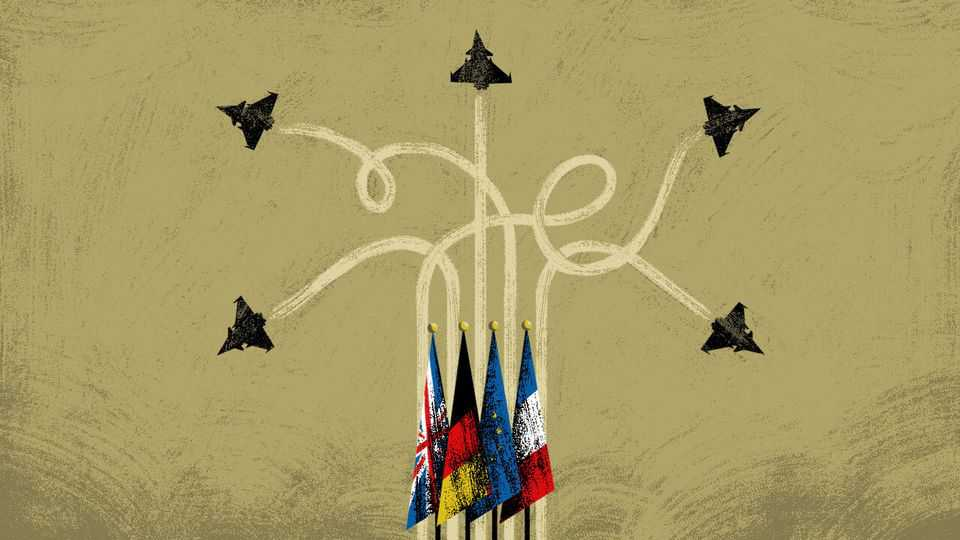

Fear united Europe. Nationalism may tear it apart
Donald Trump and Vladimir Putin made Europe serious about its own defences. That may not last

Nov 5th 2026
FOR MOST of the past 800 years, the sight of German soldiers inspired dread in Lithuanian hearts. Today, as a small Baltic state with Russia as a direct neighbour, Lithuania is happy to host a permanently deployed German armoured brigade.
The aggression of Russia’s president, Vladimir Putin, and the might-makes-right callousness of his American counterpart, Donald Trump, have not only scrambled Europe’s calculations about power, but also the continent’s balance of fear. In 2029 Germany, Europe’s largest country, plans to spend 3.5% of GDP, or €162bn ($182bn), on defence. That is more than the combined defence spending of Britain and France last year. Far from being alarmed by German rearmament, many neighbours are counting on it.
Put bluntly, after decades of underinvestment in defence, mainstream European leaders have a horror of being abandoned by America before the region is strong enough to deter Russia on its own. Their fears mounted after Mr Putin’s full-scale invasion of Ukraine in 2022. They turned to near-panic after Mr Trump was re-elected in 2024, and he made clear his scorn for Ukraine and its allies in NATO and the European Union, and his preference for ending the Ukrainian war on terms favourable to Russia.
European leaders broadly agree on the need to support Ukraine and prepare for America to become, at best, NATO’s offshore protector of last resort. That shared task helped Britain repair ties with allies that take defence seriously, including nuclear-armed France, big-spending Germany, and Ukraine’s most loyal supporters in northern and eastern Europe. A common foe puts Brexit squabbles in perspective.
The balance of fear has changed, too, in Germany, where the public had to overcome its unease about military might. Though cold-war West Germany maintained one of NATO’s largest armies, politicians allowed citizens to indulge in a comfortable fantasy, portraying post-1989 Germany as a commerce-minded, pacifist friend to all. Some on the left treated Germany as something like a recovering addict to militarism, which if allowed even a sniff of gunpowder might go on a terrible bender before waking with a headache to discover it had occupied Luxembourg, once again.
Such angst was cured by Mr Putin and above all by Mr Trump. German defence spending grew in earnest after Ukraine’s invasion in 2022, inspiring what Germany’s then-chancellor, Olaf Scholz, called a Zeitenwende, or “turning-point”. Spending surged after 2024 and the return of an America-First president.
European unity is, however, more fragile than it appears. Over the next 12 months, elections will be held in Spain, France, Poland and Italy. In several cases, parties on the nationalist right are poised for power. Some right-wing populists have histories of sympathising with Russia, including Marine Le Pen, front-runner in the French presidential contest, and Roberto Vannacci, a former general and Russia-admirer challenging Italy’s conservative prime minister, Giorgia Meloni, from her right. If Poland’s feuding politicians agree on one thing it is on loathing Russia. Still, some Polish conservatives cast Ukraine as needy, ungrateful and too slow to acknowledge crimes committed by Ukrainians against Poles during the second world war. Aid for Ukraine should come with conditions, they growl. Above all, the nationalist right is united in opposing deeper European integration, even in pro-EU Spain, where the Vox party may enter government. An exultant Ms Le Pen has predicted that a year of elections will transform the EU from a would-be superstate into a “Europe of nations”.
Alas, a nationalist wave could also derail Europe’s rearmament. To avoid frightening its neighbours, Germany can grow its armed forces and defence industries only if it puts its fiscal and military might at the service of NATO and Europe, argues Liana Fix, the author of a new book, “Germany Rearmed: The Return of War and the End of Illusions”. To be a “European” power means, in effect, to act within the Franco-German alliance in which Germany has bound its strength since 1945. But that creates a dilemma. Ms Fix fears a division of Europe into a north-eastern bloc, including the Baltic states, Britain, Nordic countries and Poland, which still seeks to deter Russia, and a Mediterranean bloc of southern governments ready to appease Mr Putin, to buy his oil and gas and to focus security spending on hardening borders against poor-world migrants. Germany would have a national interest in securing Poland and the Baltics as a buffer against Russia, Ms Fix writes. But if France does not want to join a northern bloc, Germany’s national and European interests would be at odds.
True, as Ms Le Pen scents victory, she has moderated her formerly Putin-friendly rhetoric. Casting herself as an heir to Charles de Gaulle, she pledges to maintain strong armed forces. But at a minimum her sharp-elbowed, France-first approach to industrial spending could derail multinational defence projects. At worst, Europe would conclude it cannot rely on France in a crisis.
The Trump administration’s role is both unhelpful and incoherent. Mr Trump continues to push Europeans to spend more on defence. At the same time, he seeks detente with Mr Putin and offers noisy support to pro-Russian parties on Europe’s nationalist right, including Germany’s largest opposition party, the Putin-friendly, Ukraine-spurning Alternative for Germany. But if Europe has no need to deter Russia, it is unclear why Mr Trump thinks it needs to rearm: the continent is hardly about to take on China.
Europe needs to learn the right lessons from the Trump era. The MAGA shock made Europeans, led by Germany, serious about their own security, at long last. To complete the task, Europe must now shun Trump-style populist nationalism, which risks wrecking that project. Anything else would be a fearful blunder. ■